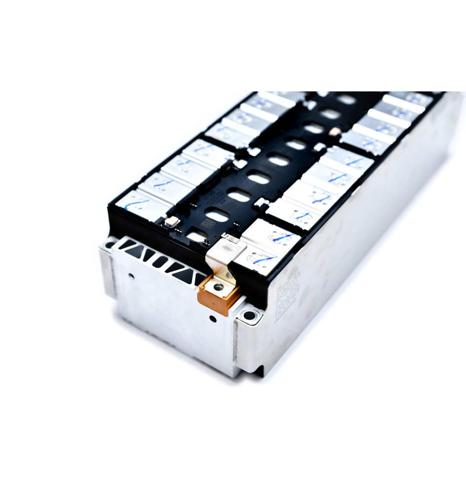

PEUGEOT e-208 / 50 kWh
Baterija, izbliza.
18 modula · 108 mernih grupa · 216 ćelija
Čeka očitavanje
STVARNI RASPORED
Tvoje označene pozicije
Uvećaj za očitavanja · sve vrednosti su i ispod slike
M ↔ B*Vrednosti su iz rednih BMS blokova B01–B18. Prikaz uz istoimeni modul je radno povezivanje; veza dijagnostičkih indeksa sa fizičkim položajem nije potvrđena.
IZABRANI MODUL
Modul 01

Tri očitane sonde prikazane su po rednom BMS bloku. Njihova pojedinačna fizička mesta nisu utvrđena.
Ćelije i merne grupe
12 fizičkih ćelija u 6 paralelnih parova (6s2p). BMS očitava jedan napon i SOH za svaki par. Kartice ispod prikazuju električni redosled, a ne potvrđena mesta ćelija na fotografiji.
Temperature vozila
Jedan pregled svih dostupnih senzora„Baterija · BMS prosek” je temperatura baterije. Posebna temperatura BMS elektronike ili samog hladnjaka nije dostupna u potvrđenim očitavanjima.